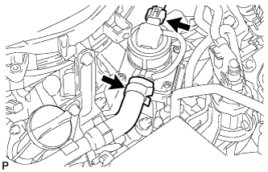
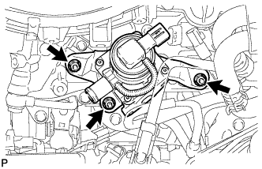

КЛАПАН ПЕРЕКЛЮЧЕНИЯ ПОДАЧИ ВОЗДУХА (для ряда 2) > СНЯТИЕ |
| 1. СНИМИТЕ ЭЛЕКТРОВАКУУМНЫЙ КЛАПАН ПРОДУВКИ |
Снимите электровакуумный клапан продувки (Нажмите здесь).
| 2. СНИМИТЕ ВОЗДУШНЫЙ ПАТРУБОК № 2 |
 |
Выверните 2 болта, отверните 2 гайки и снимите воздушный патрубок № 2.
Снимите 2 прокладки с воздушного патрубка № 2.
| 3. СНИМИТЕ КОМПЛЕКТ КЛАПАНА СИСТЕМЫ СНИЖЕНИЯ ТОКСИЧНОСТИ ОТРАБОТАВШИХ ГАЗОВ № 2 |
|  |
Отсоедините разъем комплекта клапана системы снижения токсичности отработавших газов № 2.
Отсоедините воздушный шланг № 3.
|  |
Отверните 3 гайки и снимите комплект клапана системы снижения токсичности отработавших газов № 2.